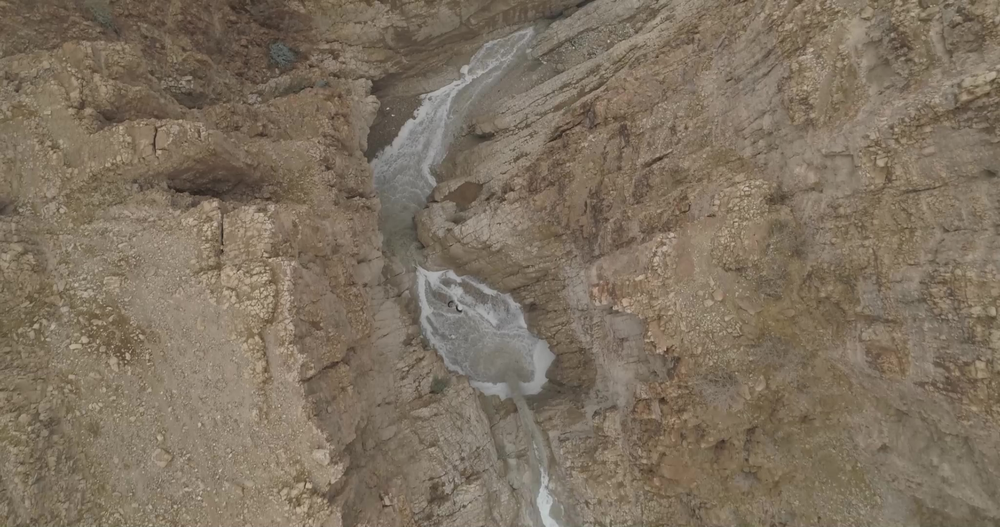
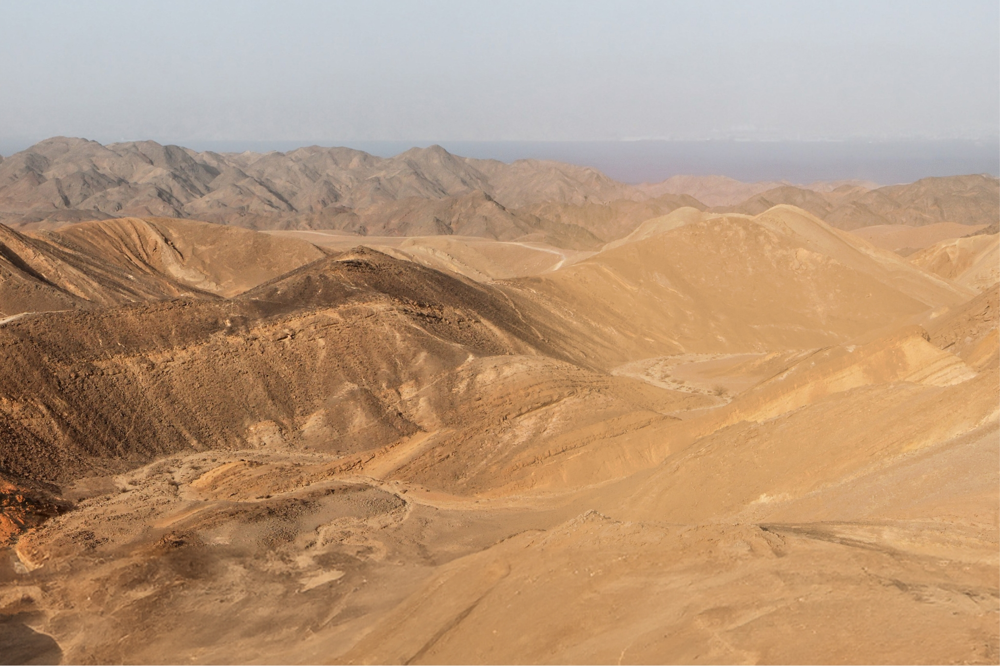
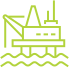
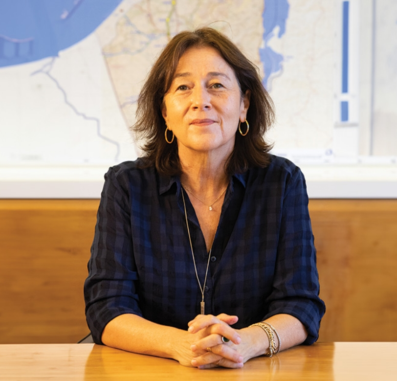
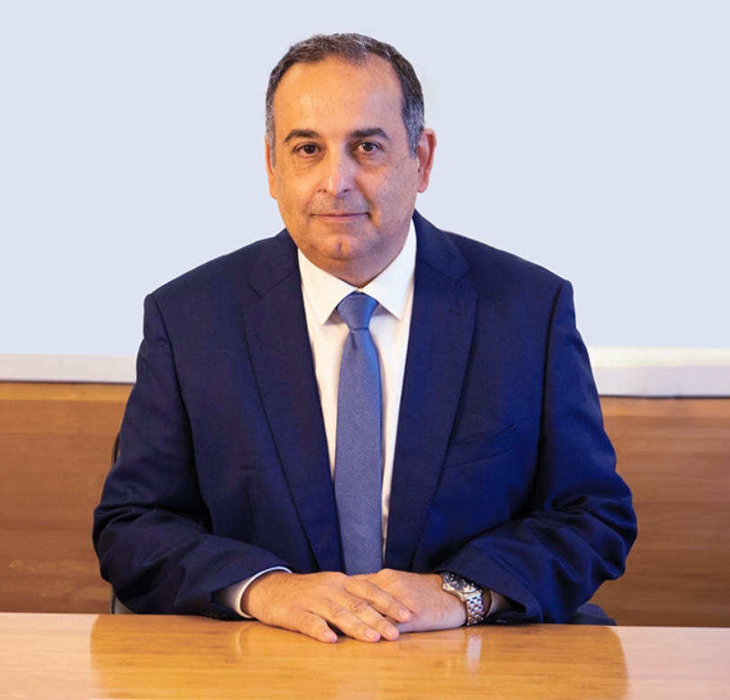

מחויבת ביישום האמצעים והטכנולוגיות המתקדמים ביותר להולכת גז טבעי ברחבי מדינת ישראל, תוך התייחסות לנושא הבטיחות כערך עליון.

ESG
אחריות סביבתית, חברתית ותאגידית

חזון סביבתי ואתיקה
לורם איפסום דולור סיט אמט, קונסקטורר אדיפיסינג אלית קונסקטורר אדיפיסינג אלית. סת אלמנקום ניסי נון ניבאה. דס איאקוליס וולופטה דיאם. וסטיבולום אט דולור, קראס אגת לקטוס וואל אאוגו וסטיבולום סוליסי טידום בעליק. קונדימנטום קורוס בליקרה, נונסטי קלובר בריקנה סטום, לפריקך תצטריק לרטי.
לפרומי בלוף קינץ תתיח לרעח. לת צשחמי צש בליא, מנסוטו צמלח לביקו ננבי, צמוקו בלוקריה שיצמה ברורק. לורם איפסום דולור סיט אמט, קונסקטורר אדיפיסינג אלית. סת אלמנקום ניסי נון ניבאה. דס איאקוליס וולופטה דיאם. וסטיבולום אט דולור, קראס אגת לקטוס וואל אאוגו וסטיבולום סוליסי טידום בעליק. קונדימנטום קורוס בליקרה, נונסטי קלובר בריקנה סטום, לפריקך תצטריק לרטי...
חזון החברה
תהווה גורם מרכזי בתהליך הרחבת המשתמשים בישראל בגז טבעי.
מחויבת בהולכה של גז טבעי ללקוחותיה – תחנות הכוח של חברת החשמל ויצרני חשמל פרטיים, מפעלים תעשייתיים, וחברות חלוקה אזוריות לגז טבעי – באופן המקצועי, האמין והבטוח ביותר.

תפעל לספק מענה לביקושים עתידיים ולקליטת גז טבעי מספקי גז בהתאם למיקומים שונים
רואה בפעילותה תרומה כלכלית וסביבתית ראשונה במעלה. החברה תפעל לממש את הפוטנציאל העצום הגלום בתחום הגז הטבעי לקידום המשק הישראלי באמצעות פיתוח מתמיד ותפעול מקצועי ומהימן של מערכת ההולכה הארצית לגז טבעי.
רואה בהון האנושי והטכנולוגי שלה את המסד המרכזי להמשך הרחבת תחום הולכת הגז הטבעי בישראל והעצמתו.
מכירה בידע המקצועי הנצבר בתחום הגז הטבעי כנכס לאומי ואסטרטגי, ותפעל לשמרו ולהרחיבו כל העת.
תפעל לשמירה על הטבע ועל הגנת הסביבה ותפעל לשימורן ולשיפורן בכל עת.
תמשיך ותפעל ברוח החזון, להובלת תחום הולכת גז טבעי למען כל אחד מלקוחותיה, ולמען הצבתו של המשק הישראלי בחזית תחומי האנרגיה והתשתית.

דבר יו"ר
הדירקטריון -
הגב' איה אבידר
הדירקטריון -
הגב' איה אבידר
לורם איפסום דולור סיט אמט, קונסקטורר אדיפיסינג אלית קונסקטורר אדיפיסינג אלית. סת אלמנקום ניסי נון ניבאה. דס איאקוליס וולופטה דיאם. וסטיבולום אט דולור, קראס אגת לקטוס וואל אאוגו וסטיבולום סוליסי טידום בעליק. קונדימנטום קורוס בליקרה, נונסטי קלובר בריקנה סטום, לפריקך תצטריק לרטי.
לפרומי בלוף קינץ תתיח לרעח. לת צשחמי צש בליא, מנסוטו צמלח לביקו ננבי, צמוקו בלוקריה שיצמה ברורק. לורם איפסום דולור סיט אמט, קונסקטורר אדיפיסינג אלית. סת אלמנקום ניסי נון ניבאה. ...
לורם איפסום דולור סיט אמט, קונסקטורר אדיפיסינג אלית קונסקטורר אדיפיסינג אלית. סת אלמנקום ניסי נון ניבאה. דס איאקוליס וולופטה דיאם. וסטיבולום אט דולור, קראס אגת לקטוס וואל אאוגו וסטיבולום סוליסי טידום בעליק. קונדימנטום קורוס בליקרה, נונסטי קלובר בריקנה סטום, לפריקך תצטריק לרטי.

לקריאה
הדירקטוריון

דבר מנכ"ל נתג''ז - שמואל תורג'מן
לורם איפסום דולור סיט אמט, קונסקטורר אדיפיסינג אלית קונסקטורר אדיפיסינג אלית. סת אלמנקום ניסי נון ניבאה. דס איאקוליס וולופטה דיאם. וסטיבולום אט דולור, קראס אגת לקטוס וואל אאוגו וסטיבולום סוליסי טידום בעליק. קונדימנטום קורוס בליקרה, נונסטי קלובר בריקנה סטום, לפריקך תצטריק לרטי.
לפרומי בלוף קינץ תתיח לרעח. לת צשחמי צש בליא, מנסוטו צמלח לביקו ננבי, צמוקו בלוקריה שיצמה ברורק. לורם איפסום דולור סיט אמט, קונסקטורר אדיפיסינג אלית. סת אלמנקום ניסי נון ניבאה. דס איאקוליס וולופטה דיאם. וסטיבולום אט דולור, קראס אגת לקטוס וואל אאוגו וסטיבולום סוליסי טידום בעליק. קונדימנטום קורוס בליקרה, נונסטי קלובר בריקנה סטום, לפריקך תצטריק לרטי...
לורם איפסום דולור סיט אמט, קונסקטורר אדיפיסינג אלית קונסקטורר אדיפיסינג אלית. סת אלמנקום ניסי נון ניבאה. דס איאקוליס וולופטה דיאם. וסטיבולום אט דולור, קראס אגת לקטוס וואל אאוגו וסטיבולום סוליסי טידום בעליק. קונדימנטום קורוס בליקרה, נונסטי קלובר בריקנה סטום, לפריקך תצטריק לרטי.

לקריאה
הנהלה
אגפים ויחידות